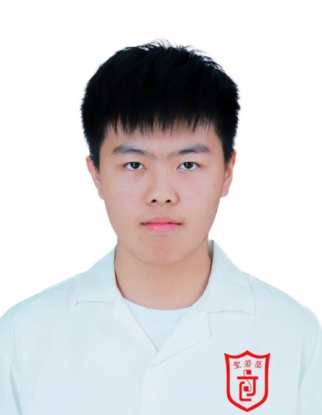

您好，我是戴雋懿
探索我的技能、成就與證書！
個人介紹
技能專長
證書與獎項
聯絡我
個人資料

您好！我是 戴雋懿，目前就讀於聖若瑟教區中學第五校。我熱愛學習新知識，並積極參與校內外活動，努力提升自我。
基本資料
姓名：
戴雋懿
年齡：
17
學歷：
F5 理科生
資歷：
在校內加入了義工隊，領袖生，及圖書館義工。在校外加入滅罪小先鋒
技能與專長
精通 WORD、EXCEL
具備基礎 Python 程式能力
熟悉圖像設計工具
擁有良好的團隊合作與溝通能力
證書與獎項
2025國際兒童及青少年中國歷史大賽--獲得特金獎
2025國際兒童及青少年天文大賽---獲得特金獎
24/25 Years Asian Mathematics Elite Annual Championship--獲得優異獎
第四屆文史地常識問答比賽--獲得亞軍
微軟辦公室專業認證 (MOS)--取得Excel Expert (Office 2019）及 Word (Office 2019）認證證書
聯絡我
如果您對我的內容有興趣，或希望與我聯繫，請使用以下方式：
Email: sundai20081008@gmail.com
Phone: +853 66300860